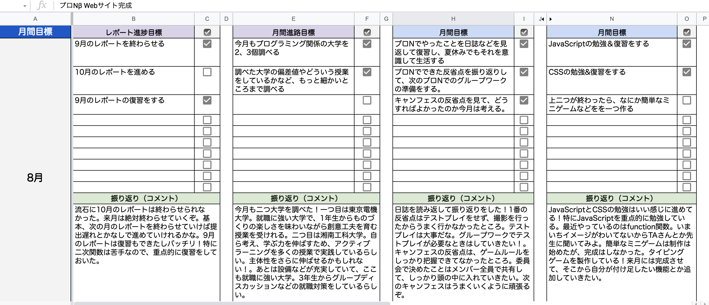
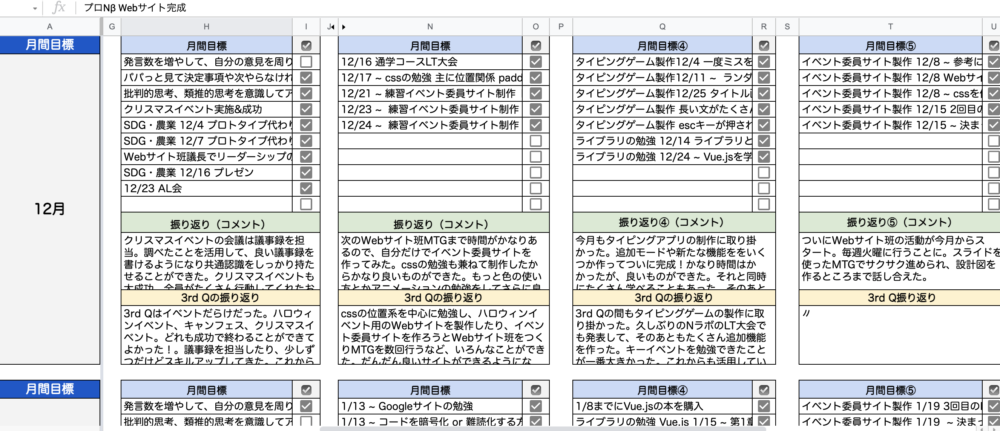

- AL合格 -
11月のAl面接で、ALに合格することができました！
午後の時間は自分が設定した時間割通りに活動することができます
Al合格で一番大変だったことは、pjsの"目標シート"の記入です

Al生になろうと思った7月から、目標シートに力を入れようと
記入量を増やすなど色々試してみましたが
9、10月に受けたAl面接では不合格
なぜなら記入されている目標が"定量的でないから"
定量的とはとは目標の状況、状態を数値化して表すこと
つまり、できたかできなかったかがわかるようにさせる
それができていなく、目標が達成されたかなどがわかりづらい
目標を定量的なものにする。という先生のアドバイスをもらい、目標シートの書き方を変えてみました

このようにさっきの画像と比べてみると目標がもっと具体的に！
目標を定量的なものにすることを意識することで、ALに合格することができました
ここからがスタートラインだと思って頑張っています